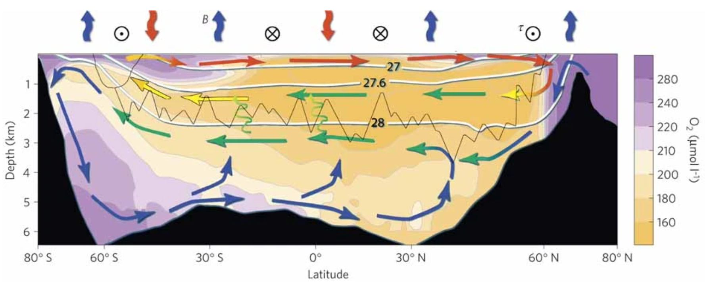

Southern Ocean dynamics - what is the response to a changing climate?
The Southern Ocean, also known as the Antarctic Ocean, surrounds the continent of Antarctica and plays a critical role in the global climate system. It is the only ocean that completely encircles the Earth, and it is the largest of the world's oceanic regions. The Southern Ocean is characterized by strong currents, high winds, and large waves. Antarctic sea ice makes it a challenging environment for scientific study, and particularly ship measurements always suffer from the presence of sea ice.
In recent decades, the Southern Ocean has experienced significant changes in temperature, salinity, and sea ice cover, which have been attributed to a changing climate. As global temperatures rise, the Southern Ocean is warming faster than other oceans, with temperatures increasing by around 0.1-0.2°C per decade over the past half century.

IPCC SROCC (2019)
One of the key dynamics driving these changes is the Southern Ocean's circumpolar current, which is the largest ocean current in the world. This current flows eastward around Antarctica and acts as a barrier, preventing warmer waters from moving southward and cold Antarctic waters from moving northward. However, the strength and position of the circumpolar current are influenced by a variety of factors, including changes in wind patterns, oceanic eddies, and atmospheric conditions.
Changes in the Southern Ocean also have significant impacts on global climate patterns. For example, the Southern Ocean is a major carbon sink, absorbing large amounts of carbon dioxide from the atmosphere. However, as the ocean warms, its ability to absorb carbon dioxide may be reduced, which could exacerbate the effects of climate change.
Overall, understanding the dynamics of the Southern Ocean and its response to a changing climate is critical for predicting and mitigating the impacts of global warming. Ongoing research efforts are focused on developing more accurate models of the Southern Ocean and improving our understanding of the complex interactions between the ocean, atmosphere, and cryosphere.
British Antarctic Survey
Meridional overturning circulation - Densest water in Antarctica travels Atlantic, Indian, and Pacific
Meridional overturning circulation, also known as the ocean conveyor belt, is a critical system of ocean currents that transports heat and materials around the world. The densest water produced in Antarctica plays a crucial role in this system, as it travels northward through the Atlantic, Indian, and Pacific oceans.
The process begins with the formation of dense water in Antarctica, where cold winds cause sea ice to form and salt to be expelled from the surrounding seawater. This process creates a highly saline and cold layer of water that sinks to the ocean floor, creating what is known as Antarctic Bottom Water.
As the dense water sinks, it creates a flow that drives the global circulation of the oceans. The water travels northward along the ocean floor, eventually reaching the three ocean basins where it upwells and merges with other ocean currents. This process helps to distribute heat around the planet, affecting global climate patterns.
Marshall and Speer (2012, Nature Geoscience)
However, recent studies have suggested that global warming could disrupt the meridional overturning circulation. As the Earth's temperature rises, the melting of the Greenland and Antarctic ice sheets could introduce large amounts of fresh water into the ocean, which could dilute the salinity of the dense water in Antarctica and hinder its ability to sink. This disruption could have significant implications for global climate patterns and marine ecosystems.
Li et al. (2023, Nature)
To better understand the meridional overturning circulation and its potential impacts, we are using a combination of satellite data, oceanographic measurements, and computer simulations. By studying this critical system, scientists hope to gain insight into how changes in the ocean's circulation could affect global climate patterns and help inform strategies for mitigating the effects of decadal-to-millennial scale climate change.
Related studies
- Yamazaki, K., Aoki, S., Katsumata, K., Hirano, D., & Nakayama, Y. (2021). Multidecadal poleward shift of the southern boundary of the Antarctic Circumpolar Current off East Antarctica. Science Advances, 7(24), eabf8755.
- Aoki, S., Yamazaki, K., Hirano, D., Katsumata, K., Shimada, K., Kitade, Y., ... & Murase, H. (2020). Reversal of freshening trend of Antarctic Bottom Water in the Australian-Antarctic Basin during 2010s. Scientific reports, 10(1), 14415.
- Yamazaki, K., Aoki, S., & Mizobata, K. (2023). Diffusion of Circumpolar Deep Water towards Antarctica. Journal of Geophysical Research: Oceans, 128(2), e2022JC019422.
- Yamazaki, K., Katsumata, K., Hirano, D., Nomura, D., Sasaki, H., Murase, H., & Aoki, S. (2024). Revisiting circulation and water masses over the East Antarctic margin (80–150° E). Progress in Oceanography, 103285.
- Yamazaki, K., Foppert, A., Gunn, K. L., Kashiwase, H., Rintoul, S. R., Neme, J., ... & Herraiz-Borreguero, L. (2026). Emerging outflow of not-so-dense shelf water from an East Antarctic polynya. Communications Earth & Environment, 7(1), 38.